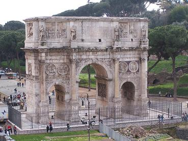
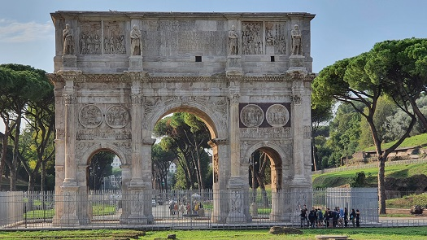
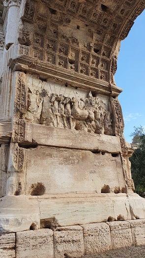
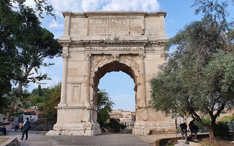
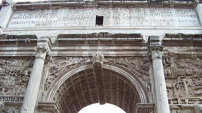
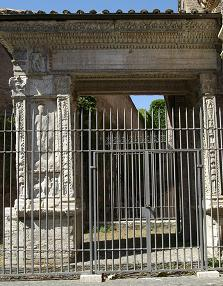
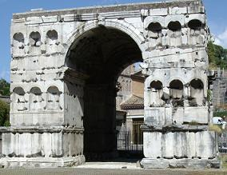
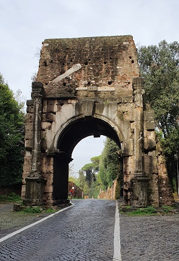
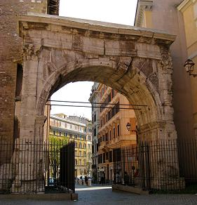
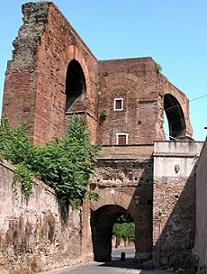

|
Arco de Constantino

Se localiza entre
el Coliseo y la colina del Palatino. Es el mejor conservado. Fue construido en
312 por el Pueblo y el Senado en conmemoración del décimo aniversario del
emperador y su victoria sobre Majencio en Ponte Milvio. Tiene 21 metros de
altura, casi 26 metros de ancho y más de 7 de profundidad, con un gran arco
central y dos laterales, con bajorrelieves de la vida y batallas del emperador.
|
 |

|
Ornamentalmente el arco de
Constantino, es una cantera para el conocimiento de la evolución estilística del
arte romano, muchos de sus elementos fueron arrancados de otros monumentos
anteriores; así, las columnas son de la época Flavia rematadas en el friso con
esculturas de la época de Trajano; los medallones dos sobre cada puerta lateral,
son de la era de Adriano; y los bajorrelieves del friso superior son de M.
Aurelio. Únicamente las bandas decoradas sobre los arcos laterales y los zócalos
son originales de la época de Constantino. Frente a él se hallaban los restos de
los cimientos de la monumental fuente conocida como Meta Sudans.
El arco cruza la Vía Triumphalis, el itinerario comenzaba en el Campo de Marte,
pasaba por el Circo Máximo y alrededores de la colina Palatina; después el arco
de Constantino, giraría a la izquierda en la Meta Sudans y marcharía a lo largo
de la Vía Sacra hacia el Foro romano y la colina Capitolina, pasando por el arco
de Tito y de Septimio Severo.
Arco de Tito

Es el arco más antiguo que se conserva. Fue erigido por Domiciano en
conmemoración de las victorias de Vespasiano y su hijo Tito sobre los judíos. El
arco muestra en sus bajorrelieves los saqueos de Jerusalén.
Situado en el límite oriental del Foro Romano, en el punto más alto de la vía
Sacra, fue construido en el año 81, pocos años después de la muerte de Tito.
Arco de un solo vano, con semicolumnas acanaladas y un ático superior. Su
inscripción dice "Senatus populusque Romanus divo Tito divi Vespasiani (filio)
Vespasiano Augusto". Los relieves de las caras internas son magníficos. El arco
se apoya en un podio sobre el que se encuentra el cuerpo formado por una bóveda
de cañón asentada sobre dos pilares decorados con dos pares de columnas adosadas
de capitel compuesto y ventanas ciegas en medio.
|
 |

Durante la Edad Media fue utilizado con fines
defensivos. Su aspecto actual es de una restauración de 1822. |
Arco de Septimio Severo

Se halla en el
Foro Imperial, a los pies de la colina del Capitolio. El arco data del 203, fue
erigido como consta en su inscripción, por el Senado y Pueblo de romana en honor
al Emperador Septimio Severo y de sus hijos Caracalla y Geta. Por debajo de él
discurría la vía sacra, y desfilaban los triunfos. Los arcos y el botín
discurrían por el arco central y por los laterales se transitaba a pie.
Los cuatro paneles situados encima de las hornacinas laterales ilustran los
episodios de las victorias párthicas de Séptimio Severo. Construido en mármol,
consta de un arco principal encuadrado por dos pequeños arcos. Esta ricamente
decorado por columnas y bajorrelieves. Bajo el ático de cada fachada, está
grabada una larga dedicatoria, originalmente, con letras de bronce. Una cuadriga
de bronce conducida por el emperador y sus dos hijos, coronaba el arco. Una
escalera permite el acceso a la plataforma superior.
|
 |
 |
Arco de los Argentarios
|
El arco de los Argentarios se
encuentra adosado al pórtico de la iglesia de San Giorgio al Velabro. Tiene
forma de puerta arquitrabada, por lo que en realidad no es un arco como su
nombre moderno indica.
Fue levantado en el año 204, en la actual zona de la plaza de la Bocca della
Verità. Era la antigua vía urbana del vicum Jugarium daba a la plaza del Foro
Boario. Se trata de una dedicatoria de los banqueros y los comerciantes boarios
de esta zona, a los augustos Septimio Severo y Caracalla, a sus respectivas
mujeres y a Geta.
La decoración del Arco de los Argentarios es muy rica y variada.
Las inscripciones fueron pronto producto de las Damnatio Memoriae, borrándose
los nombres de Plautilla y de Geta.
Tiene una altura de 6,80 m y una anchura de 5,86 m. construido y revestido en
mármol sostenido por dos grandes pilastras. Es probable que sobre el arco fuesen
colocadas las estatuas de la familia imperial. La decoración es riquísima, con
motivos vegetales y cubriendo todos los espacios disponibles.
|

|
Arco de Jano
|

Posiblemente se construyó a principios del siglo IV;
sustituyendo probablemente a otro construido en el mismo lugar.
|
Atribuido erróneamente a Ianus Quirinus, es un
cuádruple arco romano que se localiza en el Foro Boario, muy cerca del
Arco de los Argentarios. El arco se encuentra la iglesia de San Giorgio al
Velabro.
Esta realizado en mármol cuyas
dimensiones son de 16 metros de altura y 12 metros de ancho. Marcaba el
cruce de cuatro vías importantes, quadrivium.
El Arco de Jano indicaría uno de los límites del Foro Boario. La arco
presenta una serie de nichos cuyas medias cúpulas tienen forma de concha.
Tenía unas columnitas que fueron arrancadas, en el siglo XIII y se
construyó una fortaleza en el ático de dicho arco. Parcialmente enterrado
hasta 1827.
En la base sureste del Arco se halla una puerta que conduce a los niveles
superiores. También existe la posibilidad de que el edificio estuviese
rematado por una pirámide. Fragmentos de la inscripción
original se encuentran en la cercana iglesia de San Giorgio al Velabro.
Un estudio de la Universidad de Córdoba y el
Instituto de Arqueología del Consejo Superior de Investigaciones Científicas de
Mérida, afirma que se construyó para conmemorar el triunfo del emperador
Constancio II en el siglo IV.
|
Arcos de Augusto
Situado entre el Templo de Castor y Pollux y el
Templo de César. Servía de entrada monumental al Foro para los que venían de
Vicus Vestæ. Fue erigido en 29 a.e.c para conmemorar la victoria en la batalla
de Actium contra Marco Antonio y Cleopatra. Se
deterioró y en el 19 a.e.c fue sustituido por a un arco a tres bóvedas tras la
recuperación de los lábaros de los Parthos se añadieron dos hornacinas laterales
y la recuperación de los letreros perdidos en el momento de la batalla de
Carrhes en 53 a.e.c.
Otro arco estuvo situado al otro lado del Templo de
César, juntado a la basílica Emilia, la segunda entrada monumental al Foro por
la Vía Sacra.
Arco de Druso
El arco formaba
parte del acueducto Antoniniano que cruzaba la Vía Appia para alimentar las
Termas de Caracalla.
Data del siglo III, el arco está formado por dos columnas que enmarcan la
fachada y por un arquitrabe por encima del cual se coloca un tímpano triangular.
Lo que vemos hoy es sólo una parte de la obra, originalmente compuesta de varios
arcos y revestida de mármol.
A principios del siglo V, el emperador Honorio, conecto el arco con la Puerta
San Sebastián con dos murallas con fines defensivos. Actualmente desaparecidos.

Arco de Galieno
El Arco de Galieno también conocido como La Porta
Esquilina es una puerta de las Murallas Servianas, edificada en el esquilino,
justo al lado de la iglesia de San Vito. El arco debió de tener otros dos arcos más
pequeños a los laterales, pero que fueron destruidos en el siglo XV, tiene una
altura de 9 m, realizado con bloques de travertino.

Arco de Dolabella
El arco de Dolabella data del
siglo I a.e.c., esta coronado por los restos del acueducto de Nerón.

MENÚ |